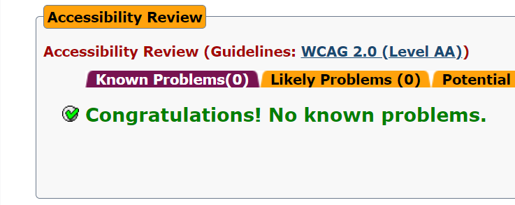

Accessibilty handler om å designe slik at alle har mulighet til å bruke nettsiden på en god måte uavhengig av utfordringer og begrensninger de måtte ha. Det er et viktig prinsipp som gjelder alle for at siden skal være enkel å navigere seg rundt på og at det er tydelig hva som vises slik at det er enkelt å hente ut informasjon. For å legge til rette for dette på nettsiden vår, planla vi tidlig hvordan elementene på siden skulle være tydelig strukturert.
Bilder
Når det kommer til bildene på nettsiden, ønsket vi at de skulle være plassert slik at de stod i sammenheng med informasjonen som ble presentert. Bilder er også med på å gjøre siden mer oversiktlig og fin å se på for brukeren. For å følge prinsippene om accessibility er det viktig å ha med alternativ tekst for bildene slik at de som ikke har mulighet til å se de, likevel kan bli opplyst om hva som skulle vært presentert ved for eksempel hjelp av en screen-reader. I tillegg vil alternativ tekst gjøre bildene tilgjengelig for søkemotorer.
Tastaturstyrt
Vi ønsket også at siden skulle være enkel å navigere seg rundt på dersom man kun har mulighet til å bruke tastaturet. Dette har vi passet på ved å teste siden vår ved å kun bruke tastatur selv og sjekket at det fungerer. For å forsikre oss om at dette skulle være så enkelt som mulig, brukte vi enkle menyer uten så mange alternativer, og sider med lite avsporinger. Hvilket element du har navigert deg til er uthevet med en firkant, noe som er automatisk for nettleseren.
Design
For at innholdet på siden skulle komme godt frem, har vi vært nøye med å bruke farger som står i kontrast slik at tekst og informasjon på siden kommer tydelig fram. I tillegg har vi brukt overskrifter som skiller seg fra resten av teksten for å skape en oversiktlig struktur som er enkel å skille fra hverandre.
Testing
Vi testet siden vår i AChecker som er et verktøy som hjelper utviklere å optimalisere tilgjengeligheten så mye som mulig etter hvordan koden er bygget opp. Den vil utheve feil eller elementer som den ser på som et problem for at siden skal være accessible. Siden vi hadde planlagt godt på forhånd, fikk vi ingen kjente problemer gjennom denne testen. Vi testet også at nettsiden så oversiktlig ut på ulike skjermstørrelser og brukte @media-funksjonen i stilarket for å endre oppsettet av blant annet grid-boksene slik at innholdet skulle presenteres fint på siden uavhengig av format.
